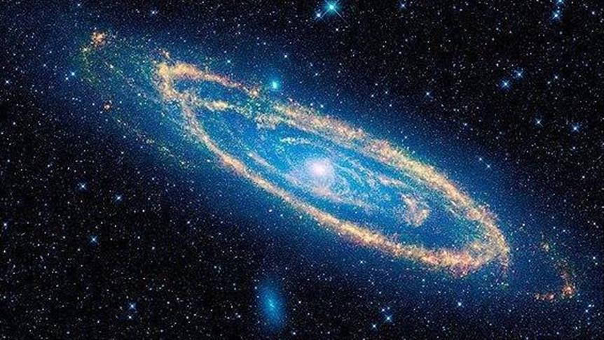
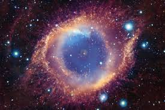

Explorando el Universo
¿Qué es el Universo?
El universo es la totalidad de la existencia, incluyendo el espacio, el tiempo, la materia, la energía y las leyes físicas que los rigen.
Es todo lo que existe, desde lo más pequeño, como partículas subatómicas, hasta lo más grande, como galaxias y cúmulos de galaxias.
Imágenes del Espacio


|
Esta es una imagen de una galaxia lejana capturada por el telescopio Hubble.
Podemos observar la grandeza del universo y cómo está formado por millones de estrellas.
Su estudio, en las mayores escalas, es el objeto de la cosmología, disciplina basada en la astronomía y la física,
en la cual se describen todos los aspectos de este universo con sus fenómenos.
Las ciencias físicas modelizan el universo como un sistema cerrado que contiene energía y materia,
y se rige por principios causales. Los físicos intentan describir el espacio-tiempo,
junto con toda la materia y energía existentes en él.
|
Video sobre el universo
Contacto
Para más información, visita el sitio de
NASA.
© Todos los derechos reservados por el autor Anthony Corozo.